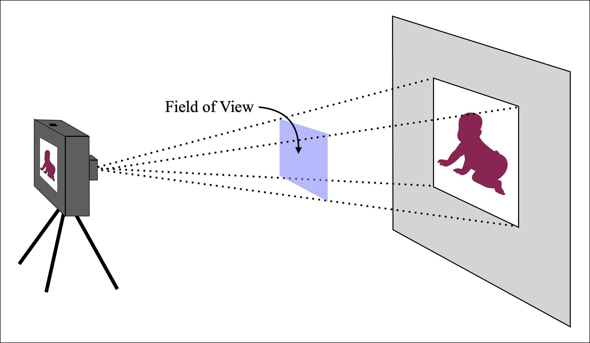

When you take a photograph, the amount of the subject you capture is determined by two things: 1) the distance between the camera and the subject and 2) the field of view (FOV) of your camera. FOV is defined by the angle that the camera sees both left-right, and also up-down. As such, it is measured in square degrees (see the dashed region in the figure below). When you want to make an image larger you either 1) get closer to the subject or 2) decrease the FOV which is done by zooming in.

Your task, then, is to measure the FOV of our camera. In our case, we are only interested in side-to-side motion, so you only need to know the the horizontal FOV. This quantity is represented by the angle θ in the figure below.
Find θ with the following steps:
Stand back from a wall and face it straight on. In landscape (horizontal) mode, take a photograph using a low zoom factor. For most modern cell phones, about 1x zoom should work great.

Record the zoom value of your photo (remember, zooming changes
the FOV) here:
Measure the distance d from
the camera to the wall. Record it here:
Look at the picture you took and use it to find the edges of the
region on the wall that you photographed. Measure this length l and record it here:
With d and l we now have enough information to
compute the horizontal FOV θ,
as follows:
The triangle to the right represents half of the horizontal FOV of our camera. Since it is a right triangle, we can use basic trigonometry to relate θ to d and l. The tangent of an angle equals 'opposite over adjacent', so:
Solve for θ by using the inverse tangent function:
The following button uses the values you entered above to compute your FOV.
You are now ready to go outside and measure the distance to your star!